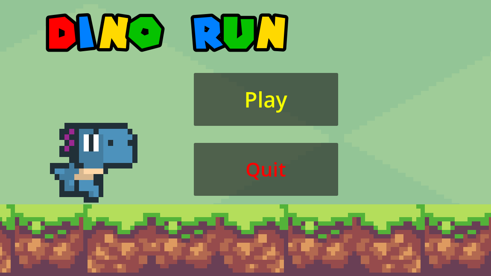
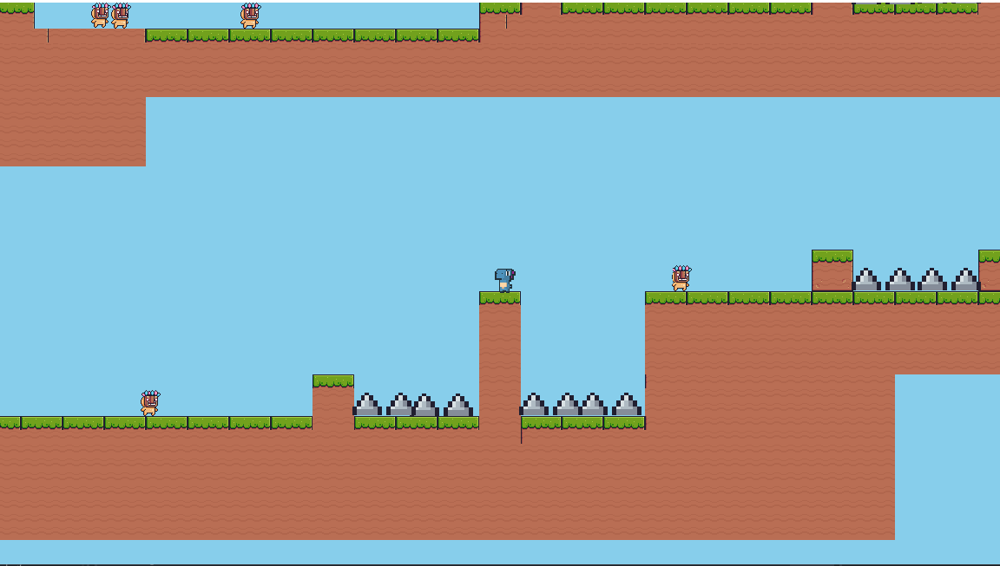
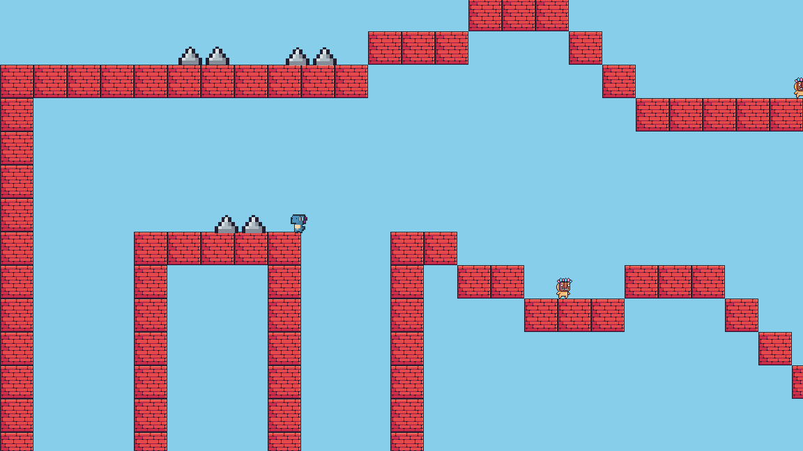

I have done some school projects, personal projects and also some work for byte jame thi is some stuff about some of the stuff I have learned and done
School Work
While being in school I have learned a lot of different languages and have enjoyed them some of the languages that I have learned such as
Java
Cobol
Python
HTML
C#
JavaScript
I have made some stuff using these languages for starters while using cobolt I have made programs for different situations for example one was a vacations program deciding how much your trip would be depending on your choices such as location, number of days, if you need to rent a car and so on. I also used my C# a lot while making a few games and some projects for school and for java I used that a lot for deferent programs as well like a house repair program.
Byte Jam
Some of the work that I have done while it may have been for school I still have done some work for byte jam its always interesting to work on. If you don't know what Byte jam is then a quick explanation is you get put into teams and your group have to make something such as a website, an app, or a game and it has to be around a theme and we usually have a set amount of time and a few days to work on it this is good for use since we get to show off to different companies what we can do
In the latest one I did my group decided to make a platform game could Dino run taking insperation from mario, sonic, legend of zelda and also a rage mario game since people will also love a challange

The game has an interesting story to say the least since it's a dino running through portals to get its egg back while avoiding enemies that move back and forth and spikes, but sadly there was no stomp mechanic

But there is more to the levels then just that since we made it that when going down you have to make the right choice and sometimes avoid spikes on the way down and when landing

Here is a video of the game if you want to see how it fully looks, but sadly there isn't any audio at the moment